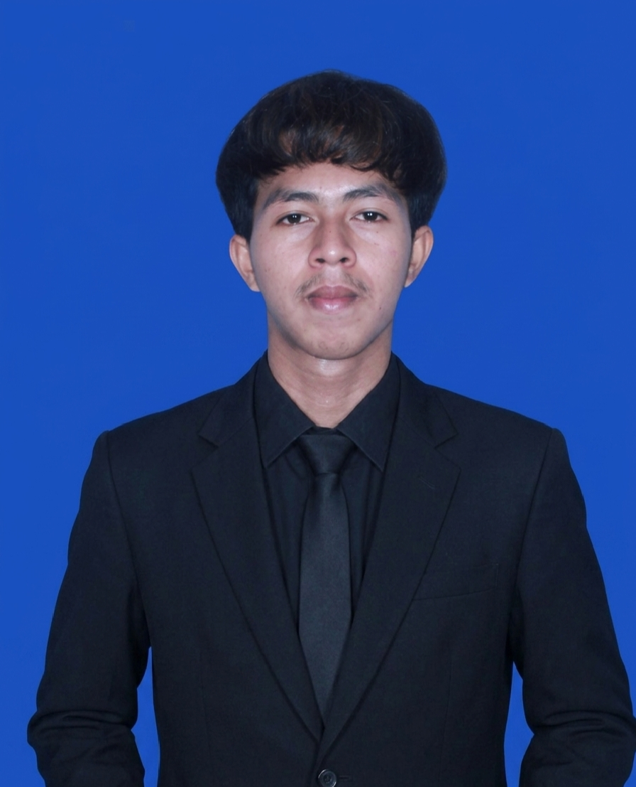

Saya adalah seseorang yang percaya bahwa logika dan estetika seharusnya berjalan beriringan, bukan dipisahkan.
Berawal dari rasa penasaran yang gak pernah habis, saya terbiasa mengeksplorasi berbagai bidang mulai dari pengembangan web dan aplikasi, hingga musik, visual, dan hal-hal kreatif lainnya. Bukan sekadar mencoba, tapi benar-benar memahami prosesnya.
Bagi saya, membangun sesuatu itu bukan cuma soal fungsi, tapi juga rasa. Kode harus bekerja dengan baik, tapi juga punya “jiwa”. Itulah kenapa saya sering menggabungkan pendekatan teknis dengan sentuhan kreatif dalam setiap hal yang saya kerjakan.
Seiring waktu, saya terbiasa menangani berbagai kebutuhan baik di ranah teknologi, kreatif, maupun pekerjaan berbasis riset dan penulisan. Semua itu saya jalani dengan satu prinsip: hasil yang rapi, jelas, dan punya nilai.
Saya mungkin tidak selalu banyak bicara soal kemampuan, tapi saya lebih suka menunjukkannya lewat apa yang saya buat.
Fullstack Development
Music Production
Video & Photo Editing
Graphic Design
Photography
Academic & Research Support
Electrical Engineering
Hardware Service
Fine Art & Drawing
Berisi berbagai karya yang saya buat mulai dari lagu original hingga beberapa interpretasi melalui cover.
Buka Youtube →